Books
Bharatiya Perspective
- Do All Roads Lead to Jerusalem
- The Heathen in His Blindness
- Being Different
- India That Is Bharat
- Decolonizing Bharat: The Balu Way
- Svayambodha and Shatrubodha
- Hints on National Education in India
- Small Is Beautiful
Biography & Autobiography
- Savarkar
- Tipu Sultan
- C. V. Raman
- When Breath Becomes Air
- Autobiography of a Yogi
Itihas
- An Era of Darkness
- Harappa 3: Battle of Ten Kings
- Ocean of Churn
- Genocide
- Land of the Seven Rivers
- The Tragic Story of Partition
Science
- Why We Sleep
- Parallel Worlds
- The Gene
- Astrophysics for People in a Hurry
- Until the End of Time
- The Bird Way
- The Tell-Tale Brain
Science, with the author's own interpretation
- Sapiens
- The Case Against Reality
- Origin Story
- The Everything Answer Book
- Survival of the Friendliest
- The Future of Humanity
Science & Philosophy
- What Is Life? — with Mind and Matter and Autobiographical Sketches
- The Web of Life
- The Quantum and the Lotus
- The Things You Can See Only When You Slow Down
- Two Birds in a Tree
- Range
Channels
Must watch — Why We Sleep. Beyond that, channels worth subscribing to:
Videos
Single films and talks, rather than whole channels.
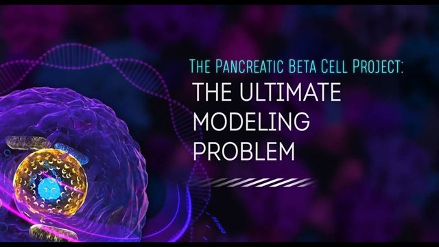
The Pancreatic Beta Cell Project BASA — The Bridge Art & Science Alliance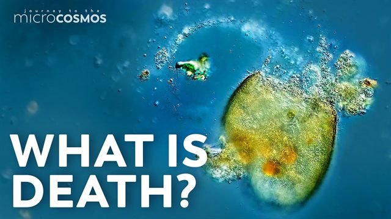
This Ciliate Is About to Die Journey to the Microcosmos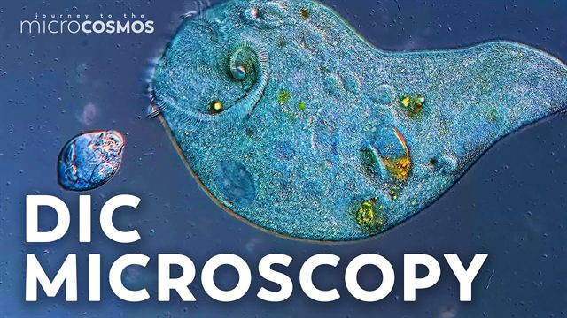
We Upgraded Our Microscope! Journey to the Microcosmos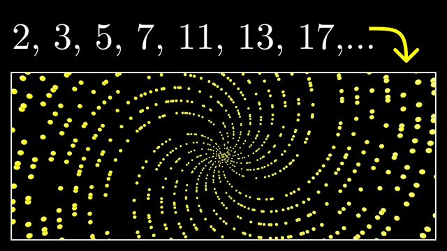
Why do prime numbers make these spirals? 3Blue1Brown · Dirichlet's theorem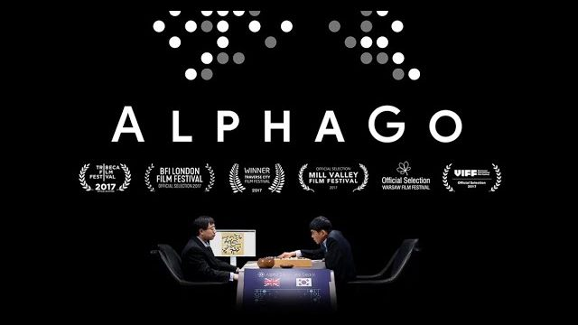
AlphaGo — The Movie Google DeepMind · full documentary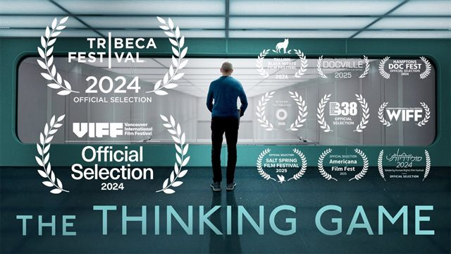
The Thinking Game Google DeepMind · full documentaryPeople
Indian engineers whose work quietly reshaped the world.
IIT Bombay, B.Tech. EE 1978
Narendra Karmarkar
Developed Karmarkar's algorithm at Bell Labs in 1984 — a breakthrough polynomial-time interior-point method for linear programming. Fulkerson Prize recipient; his work transformed global logistics, telecommunications and finance.
IIT Bombay, B.Tech. EE 1967
Arun Netravali
MS and PhD at Rice; joined Bell Labs in 1972 and became its ninth President. Pioneered the video compression standards that became the foundation of MPEG — digital TV, HDTV and streaming video. Also worked at NASA (1970–72) on space shuttle problems.
IIT Delhi, B.Tech. EE 1976
Vinod Khosla
Co-founded Sun Microsystems in 1982 at 27 as founding CEO, pioneering open systems, commercial RISC processors and Java. Founded Khosla Ventures in 2004, managing roughly $16 billion. Early OpenAI investor.
Music
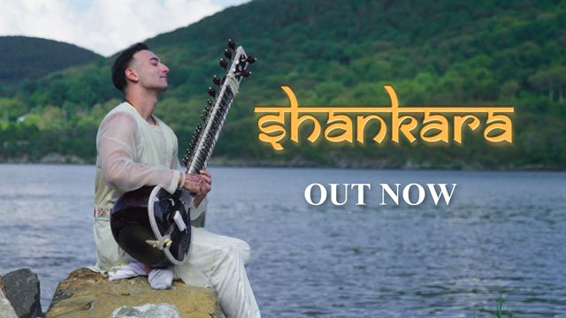
Shankara Rishab Rikhiram Sharma · Sitar for Mental Health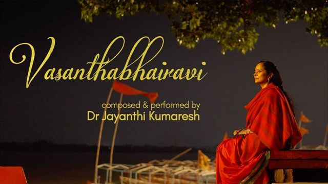
Vasanthabhairavi Dr Jayanthi Kumaresh · Veena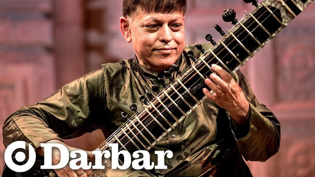
Sitar on Fire — Raag Lalit, Part 2 Pandit Budhaditya Mukherjee · Darbar Festival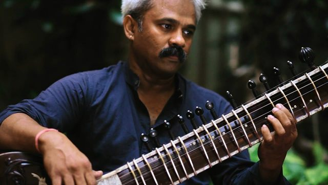
A mind-blowing sitar player tothszabi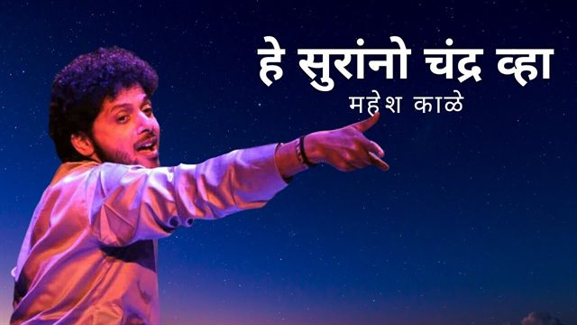
He Surrano Chandra Vha Mahesh Kale · Natyageet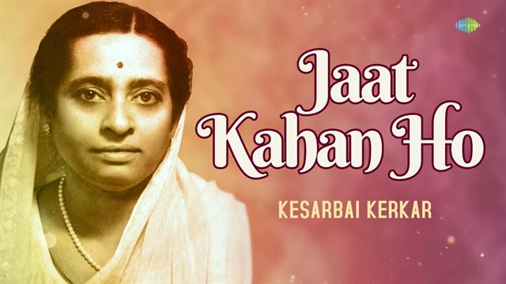
Jaat Kahan Ho — Raag Bhairavi Kesarbai Kerkar · Saregama Hindustani Classical